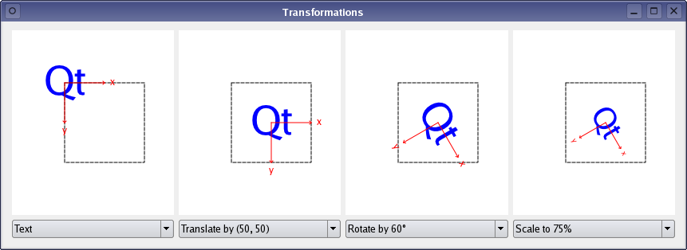

Transformations Example
The Transformations example shows how transformations influence the way that QPainter renders graphics primitives.

The application allows the user to manipulate the rendering of a shape by changing the translation, rotation and scale of QPainter's coordinate system.
The example consists of two classes and a global enum:
- The
RenderAreaclass controls the rendering of a given shape. - The
Windowclass is the application's main window. - The
Operationenum describes the various transformation operations available in the application.
First we will take a quick look at the Operation enum, then we will review the RenderArea class to see how a shape is rendered. Finally, we will take a look at the Transformations application's features implemented in the Window class.
Transformation Operations
Normally, the QPainter operates on the associated device's own coordinate system, but it also has good support for coordinate transformations.
The default coordinate system of a paint device has its origin at the top-left corner. The x values increase to the right and the y values increase downwards. You can scale the coordinate system by a given offset using the QPainter::scale() function, you can rotate it clockwise using the QPainter::rotate() function and you can translate it (i.e. adding a given offset to the points) using the QPainter::translate() function. You can also twist the coordinate system around the origin (called shearing) using the QPainter::shear() function.
All the transformation operations operate on QPainter's transformation matrix that you can retrieve using the QPainter::worldTransform() function. A matrix transforms a point in the plane to another point. For more information about the transformation matrix, see the Coordinate System and QTransform documentation.
enum Operation { NoTransformation, Translate, Rotate, Scale };
The global Operation enum is declared in the renderarea.h file and describes the various transformation operations available in the Transformations application.
RenderArea Class Definition
The RenderArea class inherits QWidget, and controls the rendering of a given shape.
class RenderArea : public QWidget { Q_OBJECT public: RenderArea(QWidget *parent = nullptr); void setOperations(const QList<Operation> &operations); void setShape(const QPainterPath &shape); QSize minimumSizeHint() const override; QSize sizeHint() const override; protected: void paintEvent(QPaintEvent *event) override;
We declare two public functions, setOperations() and setShape(), to be able to specify the RenderArea widget's shape and to transform the coordinate system the shape is rendered within.
We reimplement the QWidget's minimumSizeHint() and sizeHint() functions to give the RenderArea widget a reasonable size within our application, and we reimplement the QWidget::paintEvent() event handler to draw the render area's shape applying the user's transformation choices.
private: void drawCoordinates(QPainter &painter); void drawOutline(QPainter &painter); void drawShape(QPainter &painter); void transformPainter(QPainter &painter); QList<Operation> operations; QPainterPath shape; QRect xBoundingRect; QRect yBoundingRect; };
We also declare several convenience functions to draw the shape, the coordinate system's outline and the coordinates, and to transform the painter according to the chosen transformations.
In addition, the RenderArea widget keeps a list of the currently applied transformation operations, a reference to its shape, and a couple of convenience variables that we will use when rendering the coordinates.
RenderArea Class Implementation
The RenderArea widget controls the rendering of a given shape, including the transformations of the coordinate system, by reimplementing the QWidget::paintEvent() event handler. But first we will take a quick look at the constructor and at the functions that provides access to the RenderArea widget:
RenderArea::RenderArea(QWidget *parent) : QWidget(parent) { QFont newFont = font(); newFont.setPixelSize(12); setFont(newFont); QFontMetrics fontMetrics(newFont); xBoundingRect = fontMetrics.boundingRect(tr("x")); yBoundingRect = fontMetrics.boundingRect(tr("y")); }
In the constructor we pass the parent parameter on to the base class, and customize the font that we will use to render the coordinates. The QWidget::font() function returns the font currently set for the widget. As long as no special font has been set, or after QWidget::setFont() is called, this is either a special font for the widget class, the parent's font or (if this widget is a top level widget) the default application font.
After ensuring that the font's size is 12 points, we extract the rectangles enclosing the coordinate letters, 'x' and 'y', using the QFontMetrics class.
QFontMetrics provides functions to access the individual metrics of the font, its characters, and for strings rendered in the font. The QFontMetrics::boundingRect() function returns the bounding rectangle of the given character relative to the left-most point on the base line.
void RenderArea::setOperations(const QList<Operation> &operations) { this->operations = operations; update(); } void RenderArea::setShape(const QPainterPath &shape) { this->shape = shape; update(); }
In the setShape() and setOperations() functions we update the RenderArea widget by storing the new value or values followed by a call to the QWidget::update() slot which schedules a paint event for processing when Qt returns to the main event loop.
QSize RenderArea::minimumSizeHint() const { return QSize(182, 182); } QSize RenderArea::sizeHint() const { return QSize(232, 232); }
We reimplement the QWidget's minimumSizeHint() and sizeHint() functions to give the RenderArea widget a reasonable size within our application. The default implementations of these functions returns an invalid size if there is no layout for this widget, and returns the layout's minimum size or preferred size, respectively, otherwise.
void RenderArea::paintEvent(QPaintEvent *event) { QPainter painter(this); painter.setRenderHint(QPainter::Antialiasing); painter.fillRect(event->rect(), QBrush(Qt::white)); painter.translate(66, 66);
The paintEvent() event handler receives the RenderArea widget's paint events. A paint event is a request to repaint all or part of the widget. It can happen as a result of QWidget::repaint() or QWidget::update(), or because the widget was obscured and has now been uncovered, or for many other reasons.
First we create a QPainter for the RenderArea widget. The QPainter::Antialiasing render hint indicates that the engine should antialias edges of primitives if possible. Then we erase the area that needs to be repainted using the QPainter::fillRect() function.
We also translate the coordinate system with an constant offset to ensure that the original shape is renderend with a suitable margin.
painter.save();
transformPainter(painter);
drawShape(painter);
painter.restore();
Before we start to render the shape, we call the QPainter::save() function.
QPainter::save() saves the current painter state (i.e. pushes the state onto a stack) including the current coordinate system. The rationale for saving the painter state is that the following call to the transformPainter() function will transform the coordinate system depending on the currently chosen transformation operations, and we need a way to get back to the original state to draw the outline.
After transforming the coordinate system, we draw the RenderArea's shape, and then we restore the painter state using the QPainter::restore() function (i.e. popping the saved state off the stack).
drawOutline(painter);
Then we draw the square outline.
transformPainter(painter);
drawCoordinates(painter);
}
Since we want the coordinates to correspond with the coordinate system the shape is rendered within, we must make another call to the transformPainter() function.
The order of the painting operations is essential with respect to the shared pixels. The reason why we don't render the coordinates when the coordinate system already is transformed to render the shape, but instead defer their rendering to the end, is that we want the coordinates to appear on top of the shape and its outline.
There is no need to save the QPainter state this time since drawing the coordinates is the last painting operation.
void RenderArea::drawCoordinates(QPainter &painter) { painter.setPen(Qt::red); painter.drawLine(0, 0, 50, 0); painter.drawLine(48, -2, 50, 0); painter.drawLine(48, 2, 50, 0); painter.drawText(60 - xBoundingRect.width() / 2, 0 + xBoundingRect.height() / 2, tr("x")); painter.drawLine(0, 0, 0, 50); painter.drawLine(-2, 48, 0, 50); painter.drawLine(2, 48, 0, 50); painter.drawText(0 - yBoundingRect.width() / 2, 60 + yBoundingRect.height() / 2, tr("y")); } void RenderArea::drawOutline(QPainter &painter) { painter.setPen(Qt::darkGreen); painter.setPen(Qt::DashLine); painter.setBrush(Qt::NoBrush); painter.drawRect(0, 0, 100, 100); } void RenderArea::drawShape(QPainter &painter) { painter.fillPath(shape, Qt::blue); }
The drawCoordinates(), drawOutline() and drawShape() are convenience functions called from the paintEvent() event handler. For more information about QPainter's basic drawing operations and how to display basic graphics primitives, see the Basic Drawing example.
void RenderArea::transformPainter(QPainter &painter) { for (int i = 0; i < operations.size(); ++i) { switch (operations[i]) { case Translate: painter.translate(50, 50); break; case Scale: painter.scale(0.75, 0.75); break; case Rotate: painter.rotate(60); break; case NoTransformation: default: ; } } }
The transformPainter() convenience function is also called from the paintEvent() event handler, and transforms the given QPainter's coordinate system according to the user's transformation choices.
Window Class Definition
The Window class is the Transformations application's main window.
The application displays four RenderArea widgets. The left-most widget renders the shape in QPainter's default coordinate system, the others render the shape with the chosen transformation in addition to all the transformations applied to the RenderArea widgets to their left.
class Window : public QWidget { Q_OBJECT public: Window(); public slots: void operationChanged(); void shapeSelected(int index);
We declare two public slots to make the application able to respond to user interaction, updating the displayed RenderArea widgets according to the user's transformation choices.
The operationChanged() slot updates each of the RenderArea widgets applying the currently chosen transformation operations, and is called whenever the user changes the selected operations. The shapeSelected() slot updates the RenderArea widgets' shapes whenever the user changes the preferred shape.
private: void setupShapes(); enum { NumTransformedAreas = 3 }; RenderArea *originalRenderArea; RenderArea *transformedRenderAreas[NumTransformedAreas]; QComboBox *shapeComboBox; QComboBox *operationComboBoxes[NumTransformedAreas]; QList<QPainterPath> shapes; };
We also declare a private convenience function, setupShapes(), that is used when constructing the Window widget, and we declare pointers to the various components of the widget. We choose to keep the available shapes in a QList of QPainterPaths. In addition we declare a private enum counting the number of displayed RenderArea widgets except the widget that renders the shape in QPainter's default coordinate system.
Window Class Implementation
In the constructor we create and initialize the application's components:
Window::Window() { originalRenderArea = new RenderArea; shapeComboBox = new QComboBox; shapeComboBox->addItem(tr("Clock")); shapeComboBox->addItem(tr("House")); shapeComboBox->addItem(tr("Text")); shapeComboBox->addItem(tr("Truck")); QGridLayout *layout = new QGridLayout; layout->addWidget(originalRenderArea, 0, 0); layout->addWidget(shapeComboBox, 1, 0);
First we create the RenderArea widget that will render the shape in the default coordinate system. We also create the associated QComboBox that allows the user to choose among four different shapes: A clock, a house, a text and a truck. The shapes themselves are created at the end of the constructor, using the setupShapes() convenience function.
for (int i = 0; i < NumTransformedAreas; ++i) {
transformedRenderAreas[i] = new RenderArea;
operationComboBoxes[i] = new QComboBox;
operationComboBoxes[i]->addItem(tr("No transformation"));
operationComboBoxes[i]->addItem(tr("Rotate by 60\xC2\xB0"));
operationComboBoxes[i]->addItem(tr("Scale to 75%"));
operationComboBoxes[i]->addItem(tr("Translate by (50, 50)"));
connect(operationComboBoxes[i], &QComboBox::activated,
this, &Window::operationChanged);
layout->addWidget(transformedRenderAreas[i], 0, i + 1);
layout->addWidget(operationComboBoxes[i], 1, i + 1);
}
Then we create the RenderArea widgets that will render their shapes with coordinate transformations. By default the applied operation is No Transformation, i.e. the shapes are rendered within the default coordinate system. We create and initialize the associated QComboBoxes with items corresponding to the various transformation operations described by the global Operation enum.
We also connect the QComboBoxes' activated() signal to the operationChanged() slot to update the application whenever the user changes the selected transformation operations.
setLayout(layout);
setupShapes();
shapeSelected(0);
setWindowTitle(tr("Transformations"));
}
Finally, we set the layout for the application window using the QWidget::setLayout() function, construct the available shapes using the private setupShapes() convenience function, and make the application show the clock shape on startup using the public shapeSelected() slot before we set the window title.
void Window::setupShapes() { QPainterPath truck; QPainterPath clock; QPainterPath house; QPainterPath text; ... shapes.append(clock); shapes.append(house); shapes.append(text); shapes.append(truck); connect(shapeComboBox, &QComboBox::activated, this, &Window::shapeSelected); }
The setupShapes() function is called from the constructor and create the QPainterPath objects representing the shapes that are used in the application. For construction details, see the painting/transformations/window.cpp example file. The shapes are stored in a QList. The QList::append() function inserts the given shape at the end of the list.
We also connect the associated QComboBox's activated() signal to the shapeSelected() slot to update the application when the user changes the preferred shape.
void Window::operationChanged() { static const Operation operationTable[] = { NoTransformation, Rotate, Scale, Translate }; QList<Operation> operations; for (int i = 0; i < NumTransformedAreas; ++i) { int index = operationComboBoxes[i]->currentIndex(); operations.append(operationTable[index]); transformedRenderAreas[i]->setOperations(operations); } }
The public operationChanged() slot is called whenever the user changes the selected operations.
We retrieve the chosen transformation operation for each of the transformed RenderArea widgets by querying the associated QComboBoxes. The transformed RenderArea widgets are supposed to render the shape with the transformation specified by its associated combobox in addition to all the transformations applied to the RenderArea widgets to its left. For that reason, for each widget we query, we append the associated operation to a QList of transformations which we apply to the widget before proceeding to the next.
void Window::shapeSelected(int index) { QPainterPath shape = shapes[index]; originalRenderArea->setShape(shape); for (int i = 0; i < NumTransformedAreas; ++i) transformedRenderAreas[i]->setShape(shape); }
The shapeSelected() slot is called whenever the user changes the preferred shape, updating the RenderArea widgets using their public setShape() function.
Summary
The Transformations example shows how transformations influence the way that QPainter renders graphics primitives. Normally, the QPainter operates on the device's own coordinate system, but it also has good support for coordinate transformations. With the Transformations application you can scale, rotate and translate QPainter's coordinate system. The order in which these transformations are applied is essential for the result.
All the transformation operations operate on QPainter's transformation matrix. For more information about the transformation matrix, see the Coordinate System and QTransform documentation.
The Qt reference documentation provides several painting examples. Among these is the Affine Transformations example that shows Qt's ability to perform transformations on painting operations. The example also allows the user to experiment with the various transformation operations.